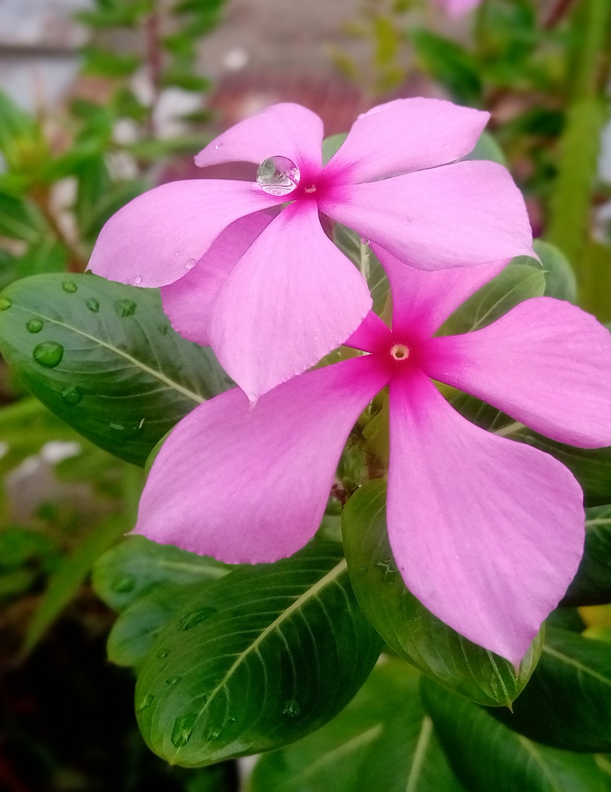
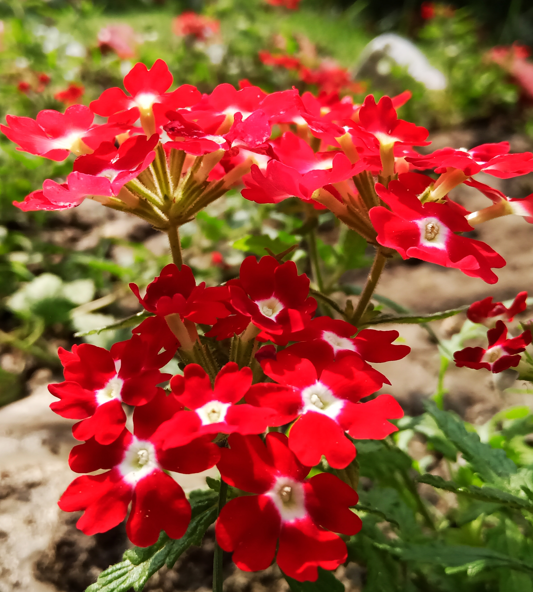
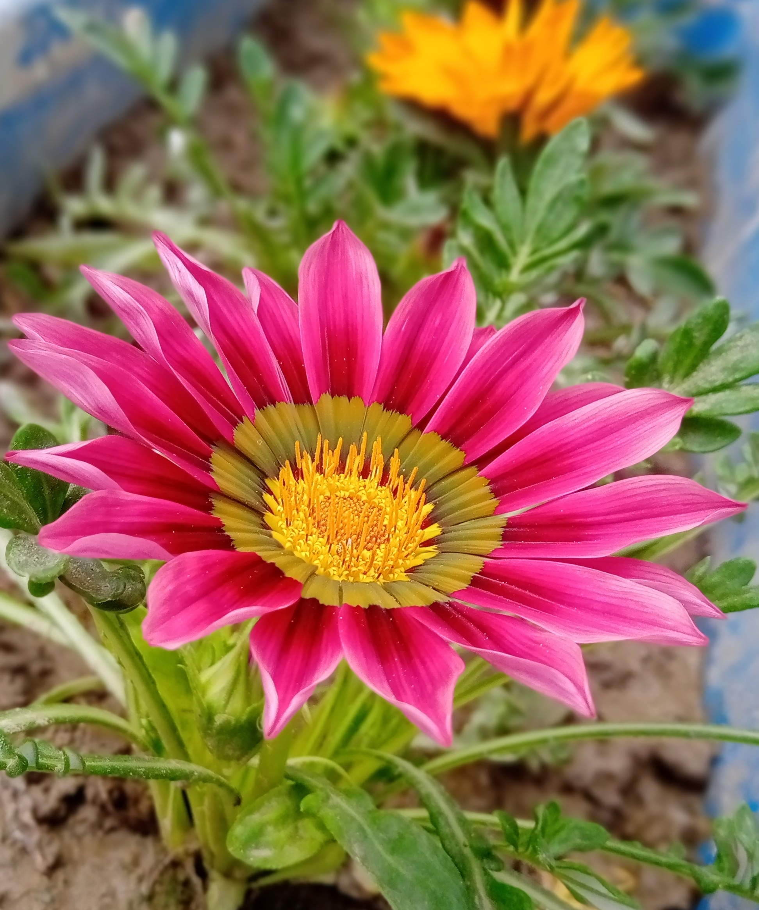

Flowers gallery
Feel happy!

Name:Cairo Morning Glory
Scientific name: Ipomoea cairicaThe lavender-coloured inflorescences are oneto a little bloody cymes. The flower stalks are 12 to 20 mm long, the sepals are 6 to 8 mm long, ovate and sting-pointed. The crown is funnel-shaped, 4 to 6 cm long and violet colored. The stamens and the stylus do not protrude beyond the crown. The ovary is hairless. The fruits are spherical capsules approximately 1 cm in diameter containing one or two hairy seeds. Each fruit matures at about 1 cm across and contains hairy seeds.
Name:Rose
Scientific name: RosaA rose is a woody perennial flowering plant of the genus Rosa, in the family Rosaceae, or the flower it bears. There are over three hundred species and tens of thousands of cultivars.They form a group of plants that can be erect shrubs, climbing, or trailing, with stems that are often armed with sharp prickles.


Name: Brite eyes
Scientific name:Madagascar PeriwinkleCatharanthus roseus, commonly known as bright eyes, Cape periwinkle, graveyard plant, Madagascar periwinkle, old maid, pink periwinkle, rose periwinkle, is a species of flowering plant in the family Apocynaceae. It is native and endemic to Madagascar, but grown elsewhere as an ornamental and medicinal plant. It is a source of the drugs vincristine and vinblastine, used to treat cancer. It was formerly included in the genus Vinca as Vinca rosea.
Name:Dianthus
Scientific name:Dianthus caryophyllus
Dianthus is a genus of about 300 species of flowering plants in the family Caryophyllaceae, native mainly to Europe and Asia, with a few species in north Africa and in southern Africa, and one species in arctic North America. Common names include carnation, pink and sweet william.


Name:Fragrant virgin's bower
Scientific name:Clematis flammula
Clematis flammula is a temperate liana known by the common name fragrant virgin's bower. It is native to southern Europe and northern Africa, but it is cultivated worldwide as an ornamental plant in gardens. The woody vine bears fragrant white flowers and small green achenes.
Name:African daisy
Scientific name:Osteospermum
Clematis flammula is a temperate liana known by the common name fragrant virgin's bower. It is native to southern Europe and northern Africa, but it is cultivated worldwide as an ornamental plant in gardens. The woody vine bears fragrant white flowers and small green achenes.


Namerag:First Love or Golden penda
Scientific name:Xanthostemon chrysanthus
Golden penda (Xanthostemon chrysanthus) is a fabulous rainforest tree that thrives in sub-tropical and warm temperate conditions. It's an Australian native that is related to eucalypts and bottlebrushes and produces masses of amazing yellow flowers in summer and autumn.